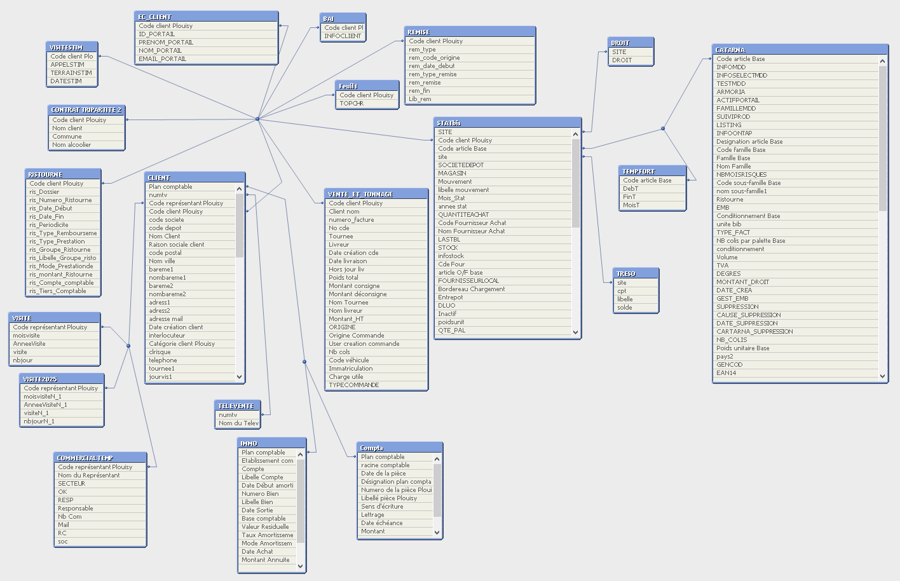
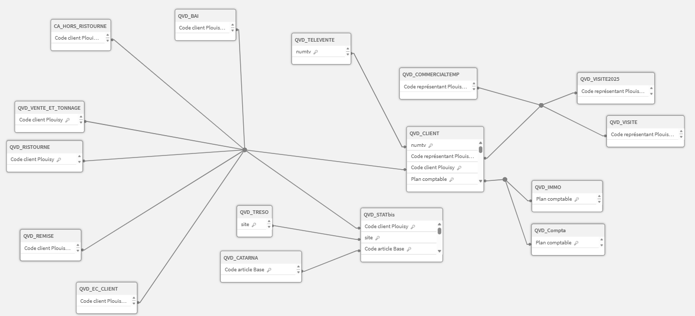

Mission Principale Refonte du Dashboard QlikView
Analyse du modèle de données existant
Le tableau de bord décisionnel "Direction Site" repose sur un modèle relationnel complexe composé de 20 tables liées et de 332 champs, dont des tables de faits massives centralisant plus de 4,1 millions de lignes.

Figure 3 : Modèle de données du tableau de bord Direction Site
Création d'un tableau de bord d'analyse des logs
Pour analyser précisément les pratiques réelles des utilisateurs sur les 46 pages du tableau de bord, j'ai implémenté une macro de suivi générant un journal de logs. Les données extraites ont été traitées directement dans une interface QlikView afin d'identifier les éléments inutilisés et de rationaliser l'application.

Figure 5 : Tableau de bord d'analyse des logs QlikView
Refonte du menu principal et intégration de KPIs
Le menu principal constituait le premier chantier graphique. L'objectif a été de désencombrer l'accueil, de moderniser les boutons d'accès et d'intégrer des indicateurs de performance de haut niveau (évolution du CA mensuel, Marge Nette 2026) faisant office de « tableau de bord météo ».
Avant la refonte

Figure 6 : Interface du menu principal de base de l'application
Version Finale Optimisée

Figure 8 : Version finale du menu principal avec l'aménagement d'un espace de filtres globaux
Mission Secondaire Transition vers la mobilité (Qlik Sense)
Conception d'un outil d'aide à la vente nomade
Pour répondre aux enjeux de la force de vente itinérante, j'ai conçu une application Qlik Sense orientée "Mobile First". Les clés de jointure et liaisons générées automatiquement par le logiciel ont été corrigées manuellement pour redéfinir une architecture relationnelle garantissant des temps de réponse optimaux.

Figure 16 : Modèle de données de l'application Qlik Sense
Vues de l'application mobile
1. Fiche d'identité synthétique
Une vue d'ensemble récapitulative orientée sur l'équipement du client et la répartition du CA par famille de produits.

Figure 17 : Page Information Client
2. Analyse de performance et scoring
Suivi de la trajectoire mensuelle et catégorisation automatisée des clients par fractiles (segmentation du CA hors ristourne).

Figure 18 : Page Performance Client